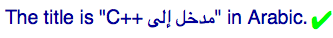
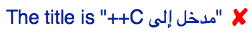
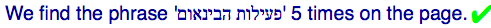
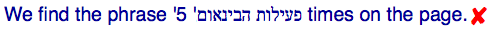
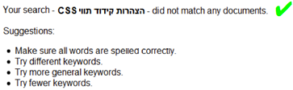
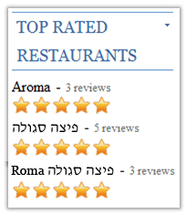
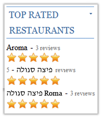
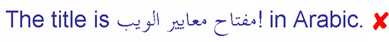
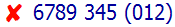

Many examples in this document are shown as images to avoid problems for those with a browser that doesn't produce what was intended or doesn't have non-ASCII fonts.
Code samples containing Arabic and Hebrew text may be displayed in different ways depending on which editor is used. In this article right-to-left text in code samples is represented by UPPERCASE TRANSLATIONS, and left-to-right text by lowercase. All text in code samples reflects the direction of characters as stored in memory, rather than the displayed result. The original version of text in uppercase translations would be read from right-to-left.
To see the full source, click on the "Test in your browser" links and view the source of the page that displays.
It is common for content in Arabic, Hebrew, and other languages that use right-to-left scripts to include numerals or include text from other scripts. Both of these typically flow left-to-right within the overall right-to-left context.
The dir attribute sets the base direction for the content of an element.
To set the default direction of the whole HTML document to right-to-left, add dir="rtl" to the html tag. This will result in all elements in the document inheriting a base direction of RTL.
You can change the base direction for content within a page by surrounding that content with an element and adding a dir attribute to indicate the desired direction.
In principle, the right thing to do for every opposite-direction phrase is to set its base direction by using the dir attribute on an element tightly wrapping the phrase.
The dir attribute also isolates the content of the element from the content surrounding it in terms of the bidi algorithm. Wrapping the opposite-direction phrases in an element with a dir attribute, helps address some of bidi problems; adding isolation helps resolve some more.
Check out the worked examples below to see how this works.
The visual order in which text is displayed can sometimes be modified using two invisible Unicode control characters: LRM (U+200E LEFT-TO-RIGHT MARK) which can be added to the source text using the character itself or the escapes ‎ or ‎, and RLM (U+200F RIGHT-TO-LEFT MARK), for which the escapes are ‏ or ‏). Each has the strong type indicated by its name, like an A or an א, but is invisible.
One use of LRM and RLM is to extend a directional run through neutral or weak characters at the start or end of an opposite-direction phrase, by putting a mark of the same direction as the phrase on the other side of those neutral or weak characters. You can see an example of how it works in the advanced usage notes for use case 1 below.
Another use is to separate an opposite-direction phrase from some neighboring but independent text that would otherwise be incorrectly treated as the same directional run (see use case 3 for a good example). To do this you can put between them a directional mark with the same directionality as the overall context.
In HTML, where the dir attribute is isolating, both cases are addressed by adding the dir attribute to an element wrapping the opposite-direction phrase, so there may be no need to use LRM/RLM. See below for details.
HTML addresses another need: text dropped into a page, say from a database, when you don't know its base direction. Before HTML5, you could only set the dir attribute to ltr or rtl, and had to somehow determine yourself which of them was appropriate.
HTML5 provided a new value for the dir attribute: auto. The auto value tells the browser to look at the first strongly typed character in the element. If it's a right-to-left typed character such as a Hebrew or Arabic letter, the element will get a direction of rtl. If it's, say, a Latin character, the direction will be ltr.
There are corner cases where this may not give the desired outcome, but it should usually produce the desired result.
Note that the browser ignores any neutral or weak characters at the beginning of the text when looking for the first strong character. It also ignores anything inside a bdi element or an element with a dir tag of its own, including auto.
Like any other use of the dir attribute in HTML, dir="auto" also directionally isolates its content from its surroundings.
The bdi (bidirectional isolate) element is just like a span that directionally isolates its content from the surrounding text, and uses first-strong heuristics to guess the base direction for its content. This is the same as using a dir attribute set to auto and wrapped around your content. It is most likely to be useful if you don't already have an element wrapping your content, as an alternative to adding a span with the dir attribute.
The bdo (bidirectional override) element prevents the bidirectional algorithm from rearranging the sequence of characters it encloses, and allows you to display the sequence from right to left or from left to right in the order in which the characters are stored in memory.
There are important use cases for bdo, but they are rare. For more information see Overriding the algorithm. Do not confuse this element with bdi, and do not use it for managing normal bidi text.
The CSS shim can be applied when a browser supports the CSS needed to isolate text, but doesn't support isolation for the dir attribute. It was particularly useful during the transition period, while several major browsers had still not implemented isolation for the dir attribute but did support the necessary CSS.
Browsers that don't yet support the CSS will simply behave in the same way as before, but most recent versions of major browsers do support the desired behavior already.
In this section we look at how to write code that addresses various use cases where the content is written by the author. The section following this deals with use cases where content is injected into the page.
A right-to-left book title is embedded in a left-to-right context, and the book title itself contains an embedded left-to-right phrase. Here is the code without any additional bidi markup:
Bad code. Don't copy!
<p>the title is "AN INTRODUCTION TO c++" in arabic.</p>
What one would expect to see is:

Unfortunately, the bidirectional algorithm cannot tell where the boundaries of the nested changes in base direction should be. The result, without help in the markup, is:
To address this in HTML, if there is no other markup around the opposite-direction phrases, wrap both in markup withthe appropriate dir value. (Note, by the way, how the markup appears inside the quotation marks, which are part of the English text.)
<p>the title is "<span dir="rtl">AN INTRODUCTION TO <span dir="ltr">c++</span></span>" in arabic.</p>
It is important to take into account that each phrase is nested. Just wrapping the Arabic in one span followed by a span containing the C++ would result in no improvement at all.
advanced usage notes: Note that two elements with dir are needed in this case. This is because there are two opposite-direction phrases. If only one was used, like this:
Bad code. Don't copy!
<p>the title is "<span dir="rtl">AN INTRODUCTION TO c++</span>"</p>
the displayed text would be as shown below. This moves the C++ to the left, as needed, but the + signs appear on the wrong side of the C.

This fails because the "C++" is an opposite-direction (LTR) phrase within the title, ending in neutral characters and the phrase is now being displayed with an RTL base direction. The bidi algorithm has no way of knowing that the plus signs are part of an LTR phrase, not of the RTL context, and thus displays them to the left of the "C" instead of to its right.
To solve this problem, wrap the overall RTL phrase in a <span dir="rtl">, and the LTR phrase nested inside it in its own <span dir="ltr">, as shown.
If there is already suitable markup to surround the book title, such as a cite element, add the dir attribute to that.
<p>the title is <cite dir="rtl">AN INTRODUCTION TO <span dir="ltr">c++</span></cite> in arabic.</p>
advanced usage notes: If the "C++" in this example was an ordinary Latin-script word, such as "Python" you wouldn't actually need to mark it up to get the right display. The bidi algorithm would take care of it. However marking up text in this way avoids you having to understand why these two cases are different, and having to work out which case applies for your content.
Similarly, if the title contained no embedded left-to-right text, you wouldn't actually need directional markup at all, but adding it avoids possible issues related to following inline text, such as where the text is edited to add a following number or another title, like this:
<p>the titles are <cite dir="rtl">AN INTRODUCTION TO ARABIC</cite>, <cite dir="rtl">FIRST STEPS IN URDU</cite>, and <cite dir="rtl">MASTERING HEBREW</cite>.</p>
The solution outlined for modern browsers will work equally well for legacy browsers.
advanced usage notes: As noted earlier, one use of LRM and RLM is to extend a directional run through neutral or weak characters at the start or end of an opposite-direction phrase, by putting a mark of the same direction as the phrase on the other side of those neutral or weak characters. For this example, instead of wrapping the "C++" in a <span dir="ltr">, we could add ‎ after the second plus:
<p>the title is <cite dir="rtl">AN INTRODUCTION TO c++‎</cite></p>
The result is what we need:
Because the LRM is a strongly left-to-right character, the neutral pluses are now between two strong left-to-right characters (the C and the LRM). They therefore also become left-to-right in direction, making a single directional run of the four characters.
Used this way, however, LRM and RLM are a bit like gotos in programming languages: a quick hack that, unlike the dir attribute, says nothing about the structure of the text. And they simply cannot be used to deal with an opposite-direction phrase that happens to contain a nested phrase in the original direction, like our complete "Introduction to C++" example above. That may seem like an esoteric case, but it is surprisingly common when displaying right-to-left data in a left-to-right page, because the use of left-to-right words (like "C++") is not uncommon in right-to-left text.
So, if you don't want to analyze whether LRM and RLM can replace the use of the dir attribute in your case, just use the dir attribute.
In the next example, the opposite-direction phrase is followed by a logically separate number. This is the code without any bidi markup:
Bad code. Don't copy!
<p>we find the phrase 'INTERNATIONALIZATION ACTIVITY' 5 times on the page.</p>
You would expect to see:

You would actually see:

This happens because the bidi algorithm tells the browser to treat the "5″ as part of the Hebrew text. Although this is often appropriate, it not appropriate here. We need to find a way to say that the name and the number are separate things, ie. to isolate the inserted name from the number.
Wrap the opposite-direction phrase (the title) in markup and add the appropriate dir value. There is no need to add anything else, since the dir attribute automatically isolates its content.
<p>we find the phrase '<span dir="rtl">INTERNATIONALIZATION ACTIVITY</span>' 5 times on the page.</p>
For browsers where dir doesn't isolate, you would fix this by not only adding the markup around the opposite direction, Hebrew text, but adding also an LRM character after it. That would prevent the number being associated with the right-to-left text.
<p>we find the phrase '<span dir="rtl">INTERNATIONALIZATION ACTIVITY</span>' ‎5 times on the page.</p>
If the search string was already tightly wrapped by an element, use that element tag to add the dir attribute, and add the LRM character after it.
Of course, if the overall context is right-to-left, eg. Arabic/Hebrew/etc. text, and the book title was in English, you would need to add an RLM character rather than an LRM character.
Neutrals between same directional runs can sometimes be misinterpreted by the bidi algorithm. In this use case we have several country names in Arabic listed in a LTR paragraph. This is an example of an opposite-direction phrase followed by another, but logically separate, opposite-direction phrase. Here is the source code without any bidi markup:
Bad code. Don't copy!
<p>the names of these states in arabic are EGYPT, BAHRAIN and KUWAIT respectively.</p>
We expect to see the following:
In the actual result, the first two Arabic words are reversed and the intervening comma is moved to the right side of the space between the words.
The reason for the failure is that, with a strongly typed right-to-left (RTL) character on either side, the bidirectional algorithm
sees the neutral comma as part of the Arabic text. It is interpreting the first two Arabic words and the comma as a single directional run in Arabic. In fact it is part of the English text, and should mark the boundary between the two separate right-to-left directional runs in
Arabic.
The solution for this use case is similar to that for the previous use case, so we will keep the notes below brief, and assume that you have read the solutions for use cases 1 and 2. We will present just the default markup approach.
Simply wrap each Arabic word with markup and add the appropriate dir value.
<p>the names of these states in arabic are <span dir="rtl">EGYPT</span>, <span dir="rtl">BAHRAIN</span> and <span dir="rtl">KUWAIT</span> respectively.</p>
If there is already markup surrounding the Arabic text, such as an a element, add the dir attribute to it.
<p>the names of these states in arabic are <a href="..." dir="rtl">EGYPT</a>, <a href="..." dir="rtl">BAHRAIN</a> and <a href="..." dir="rtl">KUWAIT</a> respectively.</p>
Add markup around the Arabic text, but add also an LRM character after it whenever that text is followed by another opposite-direction phrase. Use an RLM character if the surrounding context is right-to-left.
<p>the names of these states in arabic are <span dir="rtl">EGYPT</span>‎, <span dir="rtl">BAHRAIN</span> and <span dir="rtl">KUWAIT</span> respectively.</p>
In this section we will look at use cases that involve injecting content into a page at run time.
It is important to note that we cannot address markup inside the injected content. In all cases below, if the injected phrases contain embedded opposite-direction phrases themselves, these need to be already marked up when the phrase is injected into the page, either in the database, or added by scripting when the injected phrase is fetched. If this is not done, the injected text will look alright for simple cases, but may be problematic for more complex ones.
In the article Structural markup and right-to-left text in HTML there is an example of a page for an online book store that carries books in many languages and needs to display the original book titles regardless of the language of the user interface. Thus, a Hebrew or Arabic book title may appear in an English interface, and vice-versa.
Let us suppose that you searched for the book הצהרות קידוד תװי CSS and and let's further suppose that that book wasn't found. The bookstore might generate a message that says so. The image below shows what one would expect to see.

Note how the 'CSS' is to the left of the Hebrew text because it is part of the book title. However with the following source code ...
Bad code. Don't copy!
<p>your search - <cite class="booktitle">CHARACTER ENCODING IN css</cite> - did not match any documents.</p>
... here is the actual result. Note how the 'CSS' is now on the right of the Hebrew text.
The bdi tag automatically assigns a direction based on the first strong character in the injected string.
advanced usage notes:It is possible that the search string in this example begins with a strong left-to-right character, for example, if the book title that we are searching for begins with 'CSS', rather than ending with it. In that case, there is not much we can do by default in the markup. To cover this case you would have to use scripting to detect the direction of the string as a whole and apply that to the markup.
If there is another element around the injected text, use dir="auto".
<p>your search - <cite dir="auto"><?php echo $theString; ?></cite> - did not match any documents.</p>
Without the expected HTML markup behavior we can't really address this use case using markup, since we need to know in advance the direction of the text. This can only be achieved by knowing the direction of or examining the injected phrase before insertion, and applying the appropriate directional information by scripting.
Here's an example where the names of restaurants are added to a page from a database and followed by a number. You don't know in advance the directionality of the injected text. This is the code produced by the script that injects the phrases, without bidi markup:
And here's what one would expect to see, and what you'd actually see.
What it should look like.

What it actually looks like.

The problem with the second restaurant name arises because the browser thinks that the " – 5″ is part of the Hebrew text. This is what the Unicode Bidi Algorithm tells it to do, and usually it is correct. Not here though. We need to find a way to say that the name and the number are separate things, ie. to isolate the inserted name from the number.
In the third restaurant name the number is back in the right place, but the word 'Roma' is part of the Hebrew name, and should appear to the left of the Hebrew text. In other words, we need to apply a base direction of RTL to the whole of the injected text.
Once again, the default rule when there is no other element around the injected text, is to wrap it in bdi. The bdi element automatically isolates the injected phrase from the number, and sets the direction for the phrase based on its first strong character.
The bdi tag automatically assigns a direction based on the first strong character in the injected string.
You'll notice that the example above puts bdi around the name Aroma too. Of course, you don't actually need that, but it won't do any harm. On the other hand, it simplifies the necessary script code, and means you can handle any name that comes out of the database, whatever script it is in.
If there is another element around the injected text, use dir="auto".
Again, without HTML5 markup behavior, all we can do is add a LRM character after the injected phrase, to ensure that it is isolated from the number. This would be sufficient to correctly render the second item in the list, because it is a very simple case, with no embedded opposite-direction phrases or neutral characters. The third case, however, will not work so well, since the base direction has to be set to right-to-left for the word 'Roma' to appear on the left. This can only be properly rendered if the injected phrase has markup added to it before insertion.
It is a very common situation for punctuation or some other neutral character to appear at the end of an opposite direction phrase and belong with that phrase.
Unfortunately, such neutrals between different directional runs are typically misinterpreted unless there is additional bidi markup. In the following example, the exclamation mark should appear at the end of the Arabic text, ie. to
the left, like this:
Unfortunately, if we rely solely on the bidirectional algorithm we see this:

Given our understanding of the bidi algorithm we can easily understand why this happened. Because the exclamation mark was typed in
between the last RTL letter 'ب' (on the left) and the LTR letter 'i' (of the word 'in') its directionality is determined by the base direction of
the paragraph, ie. LTR in this case.
Because the exclamation mark is seen as LTR it joins the directional run that includes the text
'in Arabic'.
The general solution mentioned above works fine: just put the opposite-direction phrase in an element with a dir attribute. If there isn't already an element present, use a span.
<p>the title is "<cite dir="rtl" lang="ar">INTERNATIONALIZATION ACTIVITY!</cite>" in arabic.</p>
advanced usage notes:You could also simply place an RLM after the exclamation mark, but we have already discussed earlier why that is a less ideal fix. Note, also, that when using this solution, without markup, the Arabic text is not marked up for language or styling. Adding markup around the embedded title is probably a better way to solve the problem.
The picture below shows the expected result of displaying a telephone number in a right-to-left context, where the area code is surrounded by parentheses, and where the number appears at the beginning of a line or after some right-to-left text.
The next picture shows what you actually see, if you rely solely on the bidi algorithm.

Because these are numbers, the order applied by the bidirectional algorithm is slightly different from what we've seen before, but the fix is essentially the same.
Here is another, somewhat more problematic example of the same thing. The picture below shows a MAC address number as you would expect to see it displayed in a right-to-left context. The sequence 01:02:aa:4a:bb:06 looks exactly the same as it would in a left-to-right context.
Here, however, is what you will see when relying solely on the bidirectional algorithm.
This is particularly worrisome, since it's not obvious when the order is incorrect. Even if you did know it was incorrect, it is not at all clear how it should be read.
Although there are more characters involved, this problem is caused because the bidirectional algorithm assumes that the initial run of numbers (and colons, since they are neutral) are associated with the preceding Hebrew text, rather than part of the MAC address.
This example indicates that you should always wrap MAC addresses, and similar numbers, with directional information.
The solution is the same. Put the opposite-direction phrase in an element with a dir attribute. If there isn't already an element present, use a span. The following code would be used in an overall right-to-left context.
Use bdi if there isn't already a surrounding element, or put dir="auto" on a surrounding element. We just show the simplest case here. The following code would be used in an overall right-to-left context.
advanced usage notes:You could also solve both of these cases by simply inserting an RLM immediately before the number. Adding markup around the number is probably a safer way to solve the problem.